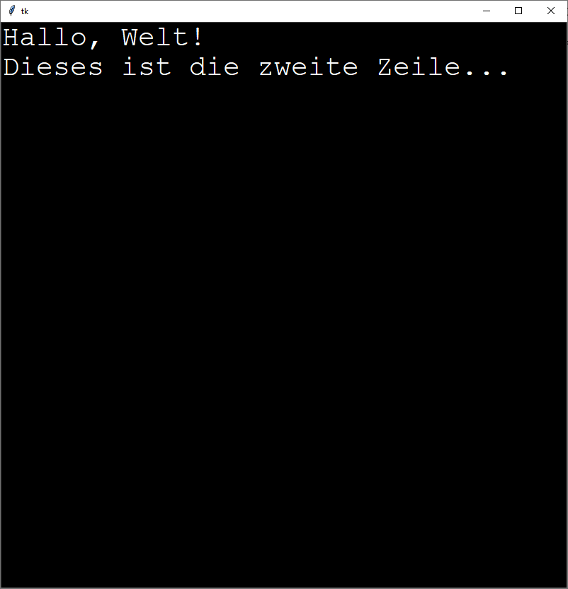
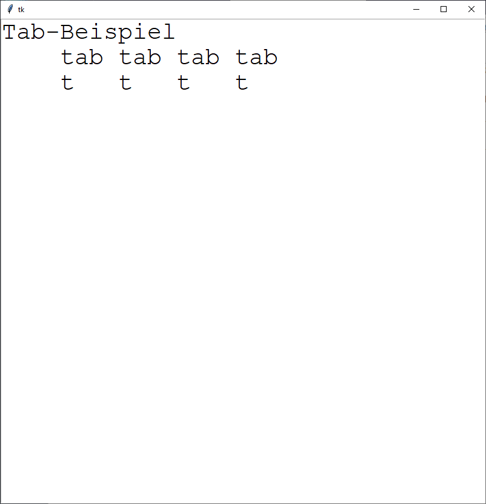
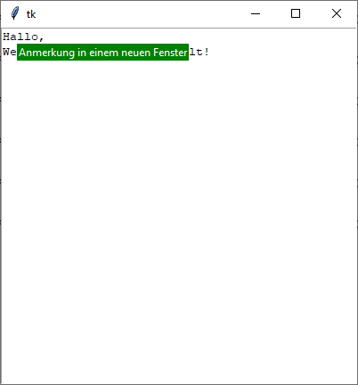

tk.Text
Hierbei handelt es sich um ein Editorwidget.
Auf Bereiche vom Text kann per Indices zugegriffen werden, das sind Positionen zwischen zwei Zeichen.
Text kann ausgezeichnet werden mit Markierungen (mark) und Tags, es können Images und Windows eingefügt werden.
Ferner gibt es einen eingebauten Undo/Redo-Mechanismus, der Undos/Redos als Block bis zu einem Separator ausführt.
Als Besonderheit gibt es so genannte "Peer Windows", das sind zweite, untergeordnete Textwidgets, die sich auf denselben Textinhalt beziehen.
tk.Text erzeugen
t = tk.Text(parent, Optionen)
| Optionsname | Beschreibung |
|---|---|
| allgemeine tk-Widget-Optionen | |
| background | Normale Hintergrundfarbe |
| exportselection | tk.YES: Ausgewählter Text kann per
STRG-C ins Clipboard exportiert werden (default) |
| highlightbackground, highlightcolor, highlightthickness | Einstellungen für den Highlightrahmen |
| insertbackground | Hintergrundfarbe in der Umgebung des Einfügecursors, überschreibt ggf. andere gesetze Farben in der Umgebung, wie etwa die Hintergrundfarbe |
| insertborderwidth | Breite des Rahmens um den Einfügecursor. Siehe auch Dimensionen |
| insertofftime | Blinkt der Einfügecursor, dann ist dieses die Zeit (in ms), die der Cursor aus ist |
| insertontime | Blinkt der Einfügecursor, dann ist dieses die Zeit (in ms), die der Cursor an ist |
| insertwidth | Breite des Einfügecursors. Siehe auch Dimensionen |
| padx, pady | Abstand des Widgets vom Parent, Extra Platz. Siehe auch Dimensionen |
| selectbackground | Hintergrundfarbe, wenn Elemente ausgewählt werden |
| selectborderwidth | Rahmenbreite, wenn Elemente ausgewählt werden. Siehe auch Dimensionen |
| selectforeground | Vordergrundfarbe, wenn Elemente ausgewählt werden |
| setgrid | tk.YES: Widget verändert seine Größe in Vielfachen
der Zeichen- oder Zeilengröße |
| spezielle tk.Text-Optionen | |
| autoseparators | Wenn undo eingeschaltet ist, dann werden
bei einer Undo-Operation Bereiche bis zu einem "Separator" vom Undo-Stack entnommen.
Diese Option regelt, ob automatisch (tk.YES) Separatoren auf den Stack
gelegt werden sollen. |
| blockcursor | Wenn tk.YES, dann wird der Einfügecursor
als Block mit einer Zeichenbreite angezeigt, sonst als Strich (default) |
| endline | Zeilenindex: ab der Zeile wird nichts mehr im Textfeld angezeigt. Damit kann sich die Eingabe von Text auf einen Bereich beschränken. |
| height | Höhe des Fensters in Vielfachen der Font-Höhe |
| inactiveselectbackground | Hintergrundarbe von ausgewähltem Text, wenn das Widget nicht den Eingabefokus hat |
| insertunfocussed | Beeinflusst Darstellung des Einfügecursors, wenn das
Widget nicht den Fokus hat: 'none': Keine Cursordarstellung,
'hollow': hohler Blockcursor und 'solid': Blockcursor.
(Option blockcursor sollte bei den letzten beiden Optionen
ebenfalls gesetzt sein) |
| maxundo | Größe des Undo-Stacks. 0 oder negativer Wert bedeuten unbegrenzte Größe |
| spacing1 | Extra-Abstand von 2 Zeilen ohne Line-Wrap |
| spacing2 | Extra-Abstand von 2 Zeilen, bei Line-Wrap |
| spacing3 | Extra-Abstand nach einer Textzeile, ohne Line-Wrap |
| startline | Zeilenindex: vor der Zeile wird nichts mehr im Textfeld angezeigt. Damit kann sich die Eingabe von Text auf einen Bereich beschränken. |
| state | tk.NORMAL oder tk.DISABLED |
| tabs | Legt Tabulator-Abstände im Text fest, siehe Abschnitt Tabulatoren |
| tabstyle | Legt fest, wie Tabulatoren im Fließtext zu behandeln sind,
'tabular': das N-te Tab-Zeichen stimmt mit dem N-ten Tabstop überein.
'wordprocessor': Tabs werden relativ zu den vorherigen Zeichen angewandt.
Siehe Abschnitt Tabulatoren |
| undo | tk.YES: Undo-Stack wird eingeschaltet. |
| width | Breite in Vielfachen des Zeichens 0 (Null) |
| wrap | Beschreibt, wie überlange Zeilen zu behandeln sind:
'none': Zeilen werden in derselben Zeile fortgesetzt,
'char': Zeile wird an einem Zeichen umgebrochen,
'word': Zeile wird an einem Wort umgebrochen |
tk.Text kennt außerdem die Standardoptionen: borderwidth, cursor, font, foreground, relief, takefocus, xscrollcommand und yscrollcommand
Das folgende Programm stellt ein einfaches Textwidget bereit und nutzt einige der Konfigurationen aus obiger Tabelle:
import tkinter as tk
from tkinter import ttk
class A(tk.Tk):
def __init__(self):
super().__init__()
self.geometry('800x800')
self._createWidgets()
def _createWidgets(self):
t = tk.Text(self, background='black', foreground='white',
insertbackground='blue', insertwidth=5,
font=('Courier', 30, tk.NORMAL))
t.pack(expand=tk.YES, fill=tk.BOTH)
if __name__ == '__main__':
window = A()
window.mainloop()
Tabulatoren
Tabulatoren werden mit den Optionen tabs und tabstyle gesetzt.
Für die Option tabs gelten folgende Parameter, wobei auch hier
Dimensionen genutzt
werden können:
- Grundeinstellung: Alle 8 Zeichen,
- tabs=('5c', '5i') würde Tabulatoren bei 5 cm und 5 Zoll positionieren,
- Normalerweise wird Text mit seiner linken Ecke positioniert, das kann geändert werden:
- tk.CENTER: Text wird am Tabstop zentriert,
- tk.LEFT: Linke Ecke wird am Tabstop ausgerichtet,
- tk.NUMERIC: Dezimalpunkte werden untereinander positioniert,
- tk.RIGHT: Rechte Textecke wird am Tabstop positioniert
- tabs=('5c', tk.CENTER, '5i', tk.RIGHT): 5 cm, Text zentriert und 5 Zoll, rechts ausgerichtet
Im folgenden Programm wird die Tabbreite auf vier Zeichen angepasst. Bei dem gewählten Font "Courier" sind alle Zeichen gleich breit. Für andere Fonts kann man die Zeichenbreite der Null oder eines Leerzeichens wählen:
import tkinter as tk
from tkinter import ttk
from tkinter import font
class A(tk.Tk):
def __init__(self):
super().__init__()
self.geometry('800x800')
self._createWidgets()
def _createWidgets(self):
f = font.Font(family='Courier', size=30)
size = f.measure('ABCD')
t = tk.Text(self, insertwidth=5, font=f,
tabs=(size, 2*size, 3*size))
t.pack(expand=tk.YES, fill=tk.BOTH)
if __name__ == '__main__':
window = A()
window.mainloop()Undo
- Jedes Einfügen / Löschen wird als Operation auf den Undo-Stack gelegt.
- Separatoren können ebenfalls auf den Stack gefügt werden.
- Wird ein „undo“ ausgeführt, werden Teile vom Stack genommen und in den Text eingefügt, sowohl Lösch- wie auch Einfügeopertionen. Es werden so viele Teile vom Stack genommen, bis ein Separator erreicht wird oder das Stackende erreicht wird.
- Redo funktioniert nur, wenn nicht vorher Text editiert wurde.
- Undo/Redo muss explizit über Optionen eingeschaltet werden.
Mit STRG-Z (unter Windows 10) lässt sich eingegebener oder gelöschter
Text im folgenden Beispiel wieder herstellen, auch die Texteingabe lässt sich rückgängig machen:
import tkinter as tk
from tkinter import ttk
class A(tk.Tk):
def __init__(self):
super().__init__()
self.geometry('800x800')
self._createWidgets()
def _createWidgets(self):
t = tk.Text(self, insertwidth=5, undo=tk.YES, autoseparators=tk.YES)
t.pack(expand=tk.YES, fill=tk.BOTH)
if __name__ == '__main__':
window = A()
window.mainloop()Indextyp
Indices beziehen sich auf Position innerhalb des Textes. Sie sind Marken zwischen zwei Zeichen.
| Typ | Beschreibung |
|---|---|
| 'zeile.zeichen' | Zeilen zählen ab 1, Zeichen ab 0. '1.0' bezeichnet die Stelle vor dem allersten Zeichen im Text |
| '@x,y' | Vor dem Zeichen, das der Position x,y am nächsten ist |
| tk.END | Hinter dem letzten Zeichen im Textdokument |
| markname | Das Zeichen nach der Textmarke
mit dem Namen markname |
| 'tagname.first', 'tagname.last' | Unmittelbar vor oder nach mit einem
Tagnamen tagname versehen Text |
| fensterName, bildName | Position des eingebetteten Fensters oder Bildes |
| 'zeile.end' | Am Ende der Zeile, unmittelbar vor dem Newline-Zeichen |
| tk.CURRENT | Textposition, die dem Mauscursor am nächsten ist |
| tk.INSERT | An der Einfügemarke |
| tk.SEL_FIRST, tk.SEL_LAST | Unmittelbar vor/nach ausgewähltem Text. Ist nichts ausgewählt, wird eine Exception geworfen |
Hinzu kommen Sprungbefehle:
| Typ | Beschreibung |
|---|---|
| '… + n chars' | Es wird von der Position aus n Zeichen nach rechts gesprungen |
| '… - n chars' | Es wird von der Position aus n Zeichen nach links gesprungen |
| '… + n indices' | Es wird von der Position aus n Indexpositionen nach rechts gesprungen |
| '… - n indices' | Es wird von der Position aus n Indexpositionen nach links gesprungen |
| '… + n lines' | Es wird n Zeilen nach unten gesprungen |
| '… - n lines' | Es wird n Zeilen nach oben gesprungen |
| '… linestart', '… lineend' | Sprung zum Zeilenanfang, Zeilenende |
| '… wordstart', '…wordend' | Springt vor den Anfang / nach dem Ende eines Wortes |
Tags
Hierbei handelt es sich um Annotationen zu Text
- Text kann mit Tags versehen werden, dieses sind Namen (keine Leerzeichen, keine "+" oder "-"),
SEList die Marke, mit der die aktuelle Textauswahl gekennzeichnet ist,- es gibt einen Tag-Stack, später hinzugefügte Tags haben mehr Gewicht als Frühere,
- der Tag-Stack kann umgebaut werden.
Tags können Optionen haben:
| Option | Bedeutung |
|---|---|
| background | Hintergrundfarbe |
| bgstipple | Bitmap, Hintergrundstipple, Muster |
| borderwidth | Rahmendicke, voreingestellt: 0 |
| elide | Ausgeblendeter Bereich, tk.YES, tk.NO |
| fgstipple | Bitmap, Hintergrundstipple, Muster |
| font | Gewählter Font |
| foreground | Textfarbe |
| justify | Textausrichtung: tk.CENTER, tk.LEFT (voreingestellt) oder tk.RIGHT |
| lmargin1 | Zeileneinzug erste Zeile. Siehe auch Dimensionen |
| lmargin2 | Zeileneinzug aller weiteren Zeilen. Siehe auch Dimensionen |
| lmargincolor | Hintergrundfarbe für Bereiche, die mit lmargin1, lmargin2 ausgezeichnet sind und keinen Text beinhalten |
| offset | Texterhöhung oder -erniedrigung auf der Grundlage der Basislinie |
| overstrike | overstrike=1: Durchgestrichenen Text |
| overstrikefg | Textfarbe durchgestrichener Text |
| relief | tk.FLAT (voreingestellt), tk.GROOVE, tk.RAISED, tk.RIDGE oder tk.SUNKEN |
| rmargin | Rechter Rand, voreingestellt: 0 |
| rmargincolor | Hintergrundfarbe für Bereiche, die keinen Text beinhalten und mit rmargin verschoben wurden |
| selectbackground, selectforeground | Farben für ausgewählten Text |
| spacing1 | Zusätzlicher Platz über der Zeile, ohne Wrap, voreingestllt 0 |
| spacing2 | Zusätzlicher Platz über der Zeile, mit Wrap, voreingestllt 0 |
| spacing3 | Zusätzlicher Platz unter der Zeile, ohne Wrap, voreingestllt 0 |
| tabs, tabstyle | Tab-Spezifikation wie im Abschnitt Tabulatoren vorgestellt |
| underline | underline=1: Text wird unterstrichen gezeichnet |
| underlinefg | Farbe unterstrichener Text |
| wrap | siehe die spezielle Optione wrap des Widgets |
Textmarken
Hierbei handelt es sich auch um Annotationen zu Text, die eher wie Lesezeichen wirken.
- Textmarken kann ein Name gegeben werden (keine Leerzeichen, Punkte^, "+" oder "-"-Zeichen),
tk.CURRENTundtk.INSERTsind zwei Textmarken,- Markierungen fließen mit den Texten mit und sind keine fixen Positionen,
- Property:
gravity:tk.RIGHT: Fügt man Text an einer Textmarke an, steht die Marke hinterher hinter dem eingefügten Text,tk.LEFT: Fügt man Text an einer Textmarke an, steht die Marke hinterher vor dem eingefügten Text
- Löscht man Text um Marken, entfernt man nicht automatisch die Textmarke mit
Window
Hierbei handelt es sich auch um Annotationen zu Text. Diese sind kleine Fenster, die neben dem Text erscheinen. Sie werden in den Text durch (unsichtbare) Zeichen eingebunden und haben damit auch einen Index. Sie können entfernt werden, indem der Text, auf den sich das Window bezieht, gelöscht wird.
Windows werden mit t.window_create(index, option, …) erzeugt. Folgende Window-Optionen gelten:
| Option | Bedeutung |
|---|---|
| align | tk.TOP, tk.BASELINE, tk.BOTTOM
oder tk.CENTER |
| create | TODO |
| padx, pady | Extra Platz, Siehe auch Dimensionen |
| stretch | tk.YES: Das Fenster wird auf mindestens eine Zeilenhöhe vergrößert |
| window | Angabe eines Widgets, in dem die Annotation angezeigt werden soll. |
Image
Hierbei handelt es sich auch um Annotationen zu Text. Diese sind Bilder, die neben dem Text erscheinen. Sie werden in den Text durch (unsichtbare) Zeichen eingebunden und haben damit auch einen Index. Sie können entfernt werden, indem der Text, auf den sich das Image bezieht, gelöscht wird.
Images werden mit t.image_create(index, option) erzeugt. Folgende Image-Optionen gelten:
| Option | Bedeutung |
|---|---|
| align | tk.TOP, tk.BASELINE, tk.BOTTOM
oder tk.CENTER |
| name | Name des Bildes in der Annotation |
| padx, pady | Extra Platz, Siehe auch Dimensionen |
| stretch | tk.YES: Das Fenster wird auf mindestens eine Zeilenhöhe vergrößert |
| image | Angabe eines Images. TODO |
Das folgende Programm erzeugt zwei Tags, die für farbige Hervorhebung sorgen. Ein Tag wird
an den Text gebunden, sobald er eingefügt wird, der Andere wird später dem Text hinzugefügt.
Der Tag 'justyellow' wird an Ereignisse gebunden, die ausgelöst werden wenn die Maus
in den getaggten Bereich gelangt oder aus ihm verschwindet. In dem Fall werden Hintergrundfarben
angepasst.
import tkinter as tk
from tkinter import ttk
class A(tk.Tk):
def __init__(self):
super().__init__()
self.geometry('400x400')
self._createWidgets()
def _createWidgets(self):
self.t = tk.Text(self, insertwidth=5)
self.t.pack(expand=tk.YES, fill=tk.BOTH)
self.t.tag_configure('justgrey', background='lightgrey')
self.t.tag_configure('justyellow', background='yellow')
self.t.insert('end', 'Hallo, Welt!', ('justgrey',))
self.t.insert('1.0', 'Dieser Text kommt an den Anfang')
self.t.tag_add('justyellow', '1.0', '1.8 wordend')
self.t.tag_bind('justyellow', '<Enter>', self._onTagMouseOver)
self.t.tag_bind('justyellow', '<Leave>', self._onTagMouseOver)
def _onTagMouseOver(self, event):
"""Maus bewegt sich auf den Tag oder vom Tag weg"""
if event.type == tk.EventType.Enter:
self.t.tag_configure('justyellow', background='black',
foreground='yellow')
else:
self.t.tag_configure('justyellow', background='yellow',
foreground='black')
if __name__ == '__main__':
window = A()
window.mainloop()Das folgende Programm setzt mit der F1-Taste eine Textmarke. Es kann mit
STRG-1 an die Stelle der Textmarke gesprungen werden. Wird an die Bookmark
gesprungen, ohne dass sie vorher gesetzt wurde, dann wird eine Fehlermeldung auf der
Konsole ausgegeben:
import tkinter as tk
from tkinter import ttk
class A(tk.Tk):
def __init__(self):
super().__init__()
self.geometry('400x400')
self._createWidgets()
def _createWidgets(self):
self.t = tk.Text(self, insertwidth=5, undo=tk.YES, autoseparators=tk.YES)
self.t.pack(expand=tk.YES, fill=tk.BOTH)
self.t.bind('<F1>', self._onSetBookmark)
self.t.bind('<Control-KeyPress-1>', self._onGoBookmark)
def _onSetBookmark(self, event):
# Bookmark setzen
self.t.mark_set('mybookmark', 'current')
# alle Textmarken ausgeben
print(self.t.mark_names())
def _onGoBookmark(self, event):
# Scrolle zum Bookmark
self.t.see('mybookmark')
# Einfügecursor an Bookmark setzen
self.t.mark_set('insert', 'mybookmark')
if __name__ == '__main__':
window = A()
window.mainloop()Das folgende Programm stellt ein neues Window mit einem Label vor:
import tkinter as tk
from tkinter import ttk
class A(tk.Tk):
def __init__(self):
super().__init__()
self.geometry('400x400')
self._createWidgets()
def _createWidgets(self):
t = tk.Text(self, insertwidth=5)
t.pack(expand=tk.YES, fill=tk.BOTH)
t.insert('end', 'Hallo, \nWelt!')
t.window_create(
'2.2',
window=ttk.Label(
t,
text='Anmerkung in einem neuen Fenster',
background='green',
foreground='white'))
if __name__ == '__main__':
window = A()
window.mainloop()Peer-Widget
Peers sind neue Ansichten desselben Textes. Sie können den gesamten Text oder auch nur einen Teil davon beinhalten.
Jeder Peer hat seine eigene current- und insert-Marke, der
sel-Tag für Textauswahl kann für jeden Peer separat konfiguriert werden.
Windows und Images werden nicht geteilt.
Hinweise darauf, wie man Peer-Widgets erstellt, findet man auf stackoverflow.com
Text-Methoden
| Funktion | Parameter | Rückgabewert | Beschreibung |
|---|---|---|---|
| t.bbox(index) | index | 4-Tupel (Rechteck: x, y, w, h) oder leere Liste | Es wird ein Rechteck um das Zeichen bei index als 4-Tupel
zurückgegeben. Das Zeichen muss sichtbar sein und es sollte
win.update_idletasks() zuvor aufgerufen worden sein.
Ist das Zeichen nicht sichtbar, wird eine leere Liste zurückgegeben |
| t.cget(…) | Siehe allgemeine Konfigurationsmethoden | ||
| t.compare(index1, op, index2) | index1, index2: Indices, op: String,
Vergleichsoperator ('<', '<=', '!=', …) |
1 oder 0 | Vergleicht 2 Indices anhand des Operators miteinander. Ist der Vergleich wahr, wird 1 zurückgeliefert |
| t.configure(…) | Siehe allgemeine Konfigurationsmethoden | ||
| t.count(COptions, index1, index2) | COption:
index1, index2:Indices |
Liste von Zahlen | Es werden Dinge gezählt, für jedes Ding wird ein Element in die Rückgabeliste geschrieben. Ist index1 > index2, werden negative Zahlen zurückgegeben |
| t.debug(dbg) | dbg:Boolean | - | Konsistenz-Check |
| t.delete(index1, index2=None) | index1, index2: Indices, index1<index2,
| - | Löscht von index1 bis index2. Fehlt index2, wird nur ein Zeichen gelöscht. |
| t.dlineinfo(index) | Index | 5-Tupel | Gibt (x, y, w, h, baseline)
zurück und berücksichtigt wrap |
| t.dump(switch, index1, index2) | switch:
index1, index2:Indices |
key1 value1 index1, … | Gibt Informationen über den Text zwischen den Indices aus |
| t.edit_modified(arg=None) | arg: Boolean oder nichts | Boolean oder nichts | Ohne Argumente wird abgefragt, ob sich der Text geändert hat. Das Argument dient dazu explizit mitzuteilen, dass sich der Text (nicht: False) geändert hat |
| t.edit_redo() | - | - | Es wird ein Redo ausgeführt |
| t.edit_reset() | - | - | Der Undo- und Redo-Stack wird gelöscht |
| t.edit_separator() | - | - | Ein Separator wird auf den Undo-Stack gelegt. Dieses begrenzt die Undo-Operation auf Stackelemente bis zum Separator |
| t.edit_undo() | - | - | Führt ein Undo aus. Undo wird bis zum nächsten Separator oder bis zum Ende des Stacks ausgeführt. Ist der Stack leer, ist dieses ein Fehler |
| t.get(index1, index2=None) | index1, index2: Indices | Text | Gibt den Text zwischen den Indices zurück. Wird nur ein Index angegeben, dann gibt die Funktion nur ein Zeichen zurück |
| t.image_cget(index, option) | index: Index: Stelle des Bildes, option: vgl. t.image_create(…) |
Wert der Option | Gibt den Wert der Option für ein Bild an der
Stelle index zurück. Siehe auch: t.image_create(…) |
| t.image_configure(index, option, …) | index: Index, option: Option oder Option-Wert-Paare | Nichts oder Dictionary | Ohne Optionen erhält man für ein Bild an der Stelle index ein Dictionary mit allen option=value-Elementen. Man kann mit der Methode Optionen setzen. |
| t.image_create(index, option) | index: Index, option: Optionen sind: align: (vertikales Alignment) top, center, bottom und baseline; image: Das zu benutzende Bild; name: Bildname; padx und pady: Innenabstand zum Bild | id | Fügt ein Bild ein und gibt eine Id zurück |
| t.image_names() | - | Tupel | Tupel mit Namen eingebetteter Bilder |
| t.index(index) | index: Index | zeile.zeichen | Übersetzt einen Index in eine Textstelle der Form zeile.zeichen |
| t.insert(index, text, tags=None, …) | index: Index, text, tags: Tupel von einem
oder mehreren Tags, …:Folgen von Text und Taglisten |
- | Fügt Text am Index ein. Ohne Tags gelten die vorhandenen Tags an der Einfügeposition. Mit Tag-Argument gelten nur diese für den eingefügten Text. |
| t.mark_gravity(mark, gravity=None) | mark: Textmarke, gravity: aus tk.LEFT, tk.RIGHT | Nichts oder Gravity | Fragt ab oder ändert die Gravity der Marke. Ohne gravity-Argument wird die Gravity zurückgegeben |
| t.mark_names() | - | Sequenz | Gibt die Namen aller Textmarken zurück |
| t.mark_next(index) | index: Index oder Name einer Textmarke | Textmarke | Gibt den Namen der Textmarke am oder nach dem Index zurück |
| t.mark_previous(index) | index: Index oder Name einer Textmarke | Textmarke | Gibt den Namen der dem Index vorhergehenden Textmarke zurück, oder einen leeren String, wenn keine Marke vorher gefunden werden kann. |
| t.mark_set(mark, index) | mark: Textmarke, index: Index | - | Erzeugt eine neue Marke am index, wenn der Name der Marke noch nicht verwendet wurde. Sonst wird die Marke zum Index verschoben |
| t.mark_unset(mark…) | mark: Textmarke(n) | - | Entfernt die Textmarke mark. tk.CURRENT und tk.INSERT werden nicht gelöscht |
| t.peer_create(path, Options) | path:TODO,
Options:Textwidget Optionen | - | Erzeugt ein neues Peer-Fenster, das sich genau so verhält wie das originale Textwidget |
| t.peer_names() | - | Liste | Liste von Peer-Fenstern zu diesem Textwidget |
| t.pendingsync | Zur Zeit nicht unterstützt | ||
| t.replace(index1, index2, chars, tagList[,chars, taglist]*) | index1, index2:Indices, tagList: Liste von Tags,
chars: Text |
- | Ersetzt Zeichen zwischen index1 und index2
durch chars und setzt die Tags entsprechend neu. |
| t.scan_dragto(x, y), t.scan_mark(x, y) | x,y: Mauspositionen | - | Ermöglicht schnelles Scrollen mit der Maus auf der Fläche: scan_mark(…) wird
an einen Mausknopf gebunden, <Motion> wird an scan_dragto(…) gebunden.
x,y sind die jeweils übergebenen Mauspositionen. Bei <Motion> ist darauf
zu achten, dass der Mausknopf weiterhin gedrückt ist. |
| t.search(pattern, index, stopindex=None, forwards=None, backwards=None, exact=None, regexp=None, nocase=None, count=None, elide=None) | pattern: String oder Regulärer Ausdruck, nach dem gesucht wird,
index, stopIndex: Start- und Endindex der Suche, index
muss vor stopIndex liegen, bei Rückwärtssuche anders herum.
forwards: Vorwärtssuche, schneller als Rückwärtssuche,
backwards: Rückwärtssuche, diese Option hat Vorrang vor forwards,
exact: Exaktes Finden statt Mustersuche (default),
regexp: pattern ist ein regulärer Ausdruck,
nocase: Case-Insensitiv,
count variable: Variable hält die Anzahl der gematchten Zeichen fest
(ohne ausgeblendeten Text), vom Typ tk.IntVar(),
elide: Findet auch ausgeblendeten Text |
Index oder leerer String | Sucht nach pattern im gegebenen Indexbereich. Siehe auch Abschnitt Text Suchen |
| t.see(index) | index: Index | - | Scrollt so, dass index sichtbar wird. |
| t.sync | Zur Zeit nicht unterstützt | ||
| t.tag_add(tagName, index1, index2=None, …) | tagName: Tagname, index1, index2…: Indices | - | Der Bereich von index1 bis vor index2 (und weitere Indexgruppen)
wird mit dem Tag tagName versehen |
| t.tag_bind(tagName, sequence, func, add=None) | tagName: Tagname, sequence: Event, func: Callback, add='+': Zusätzliches Event, sonst Ersetzung | Nichts, Funktion oder Liste | Bindet eine Callback an einen Tag. Fragt Events ab, wenn nur ein Argument verwendet wird. Fragt Funktion ab, wenn zwei Argumente verwendet werden |
| t.tag_cget(tagName, option) | tagName: Tagname, option: Tagoption | Wert der Option | Gibt den Optionswert zurück |
| t.tag_configure(tagName, option, …) | tagName: Tagname, option: Tagoption als Schlüssel-Wert-Paar | Nichts, Wert oder Dictionary | Gibt ein Dictionary mit Optionen und Wert aus, wenn die Funktion mit nur einem Argument aufgerufen wird. Sonst wird Eine Option gesetzt oder abgefragt |
| t.tag_delete(tagName, …) | tagName: Tagnamen | - | Löscht Tags und damit auch ggf. vorhandene Bindungen |
| t.tag_lower(tagName, belowThis=None) | tagName, belowThis: Tagnamen | - | Ein Argument: tagName kommt nach ganz unten auf den Tag-Stack, sonst kommt tagName unter belowThis. Damit wird die Priorität der Tags verändert: höhere Tags haben auch höhere Priorität |
| t.tag_names(index=None) | index: Index | Sequenz mit Tag-Namen | Kein Argument: Gibt alle Tagnamen des Widgets aus, sonst die Tagnamen des Zeichens am Index |
| t.tag_nextrange(tagName, index1, index2=None) | tagName: Tagname, index1, index2: Textindex | Liste mit 2 Elemente | Sucht nach dem Start des Tags mit tagname.
Anfang ist index1, Ende entweder index2 oder
das Ende des Dokuments. Diese Methode gibt 2 Indices zurück:
Index des ersten und des letzten getaggten Zeichens. Ist die Suche
nicht erfolgreich, wird ein leerer String zurückgegeben |
| t.tag_prevrange(tagName, index1, index2=None) |
wie tag_nextrange(…), nur umgekehrt | ||
| t.tag_raise(tagName, aboveThis=None) | wie tag_lower(…), nur umgekehrt | ||
| t.tag_ranges(tagName) | tagName: Tagname | Liste | Alle mit tagName getaggten Bereiche werden als Liste ausgegeben. Die Liste enthält die Textindeces vor dem Beginn und nach dem Ende |
| t.tag_remove(tagName, index1, index2=None, …) | tagName: Tagname, index1, index2: Textindex | - | Entfernt den angegebenen Tag im angegebenen Bereich. Ist index2
nicht angegeben, wird der Tag nur von einem Zeichen entfernt |
| t.tag_unbind(tagName, sequence, funcid=None) | tagName: Tagname, sequence: Event, funcid: Callback | - | Entfernt die Event-Bindung vom Tag. Gibt es mehrere Bindungen, kann mit dem dritten Argument angegeben werden, welche Bindung entfernt werden soll |
| t.window_cget(index, option) | index: Index, option: Window-Option | Wert der Option | Gibt den Wert der Option vom eingebtteten Window zurück. |
| t.window_configure(index, option, …) | index: Index, option=value: Window-Optionen eines eingebetteten Widgets | nichts oder Dictionary | Setzt Optionen und Werte für eingebettete Widgets.
Fehlt option, so erhält man ein Dictionary aller Optionen und Werte. Kann
Werte zu Window-Optionen abfragen, indem man value nicht angibt |
| t.window_create(index, option, …) | Siehe Abschnitt Window | ||
| t.window_names() | - | Sequenz | Sequenz aller Namen von eingebtteten Windows |
| t.xview(tk.MOVETO, fraction) | fraction: 0…1 | - | Wird typisch Scrollbar command gebunden: Scrollt in horizontaler Richtung zur relativen Position |
| t.xview(tk.SCROLL, n, what) | n: Zahl, what:tk.UNITS oder tk.PAGES | - | Scrollt Textwidget links/rechts um n what |
| t.xview_moveto(fraction) |
siehe t.xview(tk.MOVETO, fraction) | ||
| t.xview_scroll(n, what) |
siehe t.xview(tk.SCROLL, n, what) | ||
| t.yview(tk.MOVETO, fraction) |
siehe t.xview(tk.MOVETO, fraction) | ||
| t.yview(tk.SCROLL, n, what) |
siehe t.xview(tk.SCROLL, n, what) | ||
| t.yview_moveto(fraction) |
siehe t.xview_moveto(fraction) | ||
| t.yview_scroll(n, what) |
siehe t.xview_scroll(n, what) | ||
Text suchen
Text im Editor findet man mit Hilfe der Methode t.search(…). Das folgende
Beispiel findet im Editor eingegebenen Text, wobei die Suche per regulärem Ausdruck erfolgen kann.
Einen Überblick über reguläre Ausdrücke, wie sie von tkinter verstanden werden, findet man
in der Doku von Tcl/Tk.
Im Beispiel wird die erste gefundene Textstelle markiert.
import tkinter as tk
from tkinter import ttk
class A(tk.Tk):
def __init__(self):
super().__init__()
self.geometry('400x400')
self._createWidgets()
def _createWidgets(self):
self._text = tk.Text(self, width=40, height=20)
self._text.pack(side=tk.TOP, expand=tk.YES, fill=tk.BOTH)
self._text.tag_configure('found-tag', background='lightgreen')
frame = ttk.Frame(self)
frame.pack(side=tk.TOP, expand=tk.YES, fill=tk.X)
self._entry = ttk.Entry(frame)
self._entry.pack(side=tk.LEFT, expand=tk.YES, fill=tk.X)
button = ttk.Button(frame, text='Finde', command=self._onFind)
button.pack(side=tk.LEFT, fill=tk.X)
def _onFind(self):
searchText = self._entry.get()
if len(searchText) == 0:
return
var = tk.IntVar()
foundIndex = self._text.search(searchText, '1.0', stopindex=tk.END,
nocase=tk.YES, count=var,
regexp=tk.YES)
if len(foundIndex) == 0:
return
count = var.get()
lastIndex = self._text.index(f'{foundIndex} + {count}c')
self._text.tag_remove('found-tag', '1.0', tk.END)
self._text.tag_add('found-tag', foundIndex, lastIndex)
if __name__ == '__main__':
window = A()
window.mainloop()Virtuelle Ereignisse
tk.Text kennt die folgenden virtuellen Ereignisse:
- '<<Modified>>': Der Text wurde nach dem letzten Speichern verändert. Siehe auch
t.edit_modified(…) - '<<Selection>>': Die Textauswahl ändert sich, das
sel-Tag enthält den Bereich der Textauswahl - '<<UndoStack>>': Es wird das erste Element auf den Undo-Stack gelegt oder der Undo-Stack wird geleert
- '<<WidgetViewSync>>': Das Text-Widget berechnet(e) die Linienhöhe neu
Referenzen
Siehe Auch
- https://tcl.tk/man/tcl8.7/TkCmd/text.html
- Reguläre Ausdrücke für
t.search(…): https://tcl.tk/man/tcl8.7/TclCmd/re_syntax.html